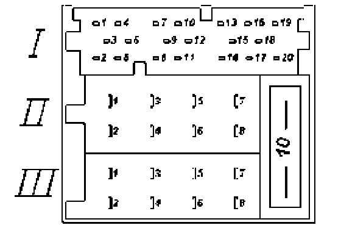

Multi-Pin Connector Ill, -T8-, 8-Pin, Black
Radio connector (Sound System), terminal identification
Multi-pin connector Ill, -T8-, 8-pin, black

1 - Vehicle speed sensor (GALA)
2 - Mute (telephone mode)
3 - On Board Diagnostic (OBD)/K wire
4 - Ignition switch -S- contact
5 - Control signal for anti-theft system, SAFE
6 - Illumination, terminal 58b
7 - Battery +, terminal 30
8 - Battery -, terminal 31
CAUTION!
On vehicles wired for and equipped with Sound System radios, multi-pin connector III, -T8- terminal 3 must NOT be connected to a power or ground source (for example, while installing VW Deluxe and Premium radios or aftermarket radios, additional sound system components and related wiring that is not Factory approved).
The VAG 1551/1552 Scan Tool and any other Electronic Control Modules with OBD capabilities installed in the vehicle will be damaged and will malfunction as a result.
DO NOT install a Deluxe, Premium or aftermarket radio in place of a Sound System radio without modifying the vehicle radio harness.